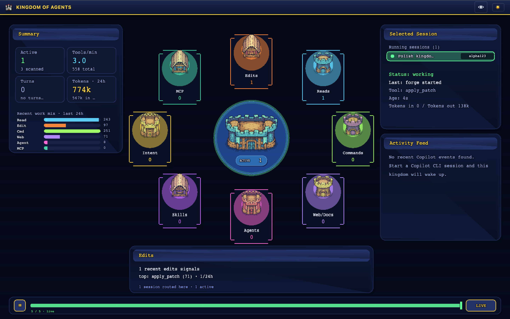
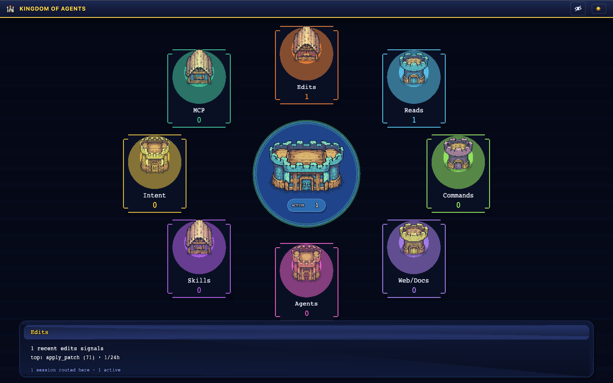

🏰 Kingdom of Agents
A live, medieval-themed dashboard for the GitHub Copilot CLI.
Watch your active Copilot CLI sessions become a living kingdom of districts — forge, library, terminal keep, signal tower, guild hall, tome hall, envoy house, and royal court — with tool calls, agent delegations, errors, and alerts surfaced in real time.


Status
Kingdom of Agents is early (v0.1.0). Builds for macOS, Windows, and Linux are produced from the
v* tag pipeline and attached to each
GitHub Release.